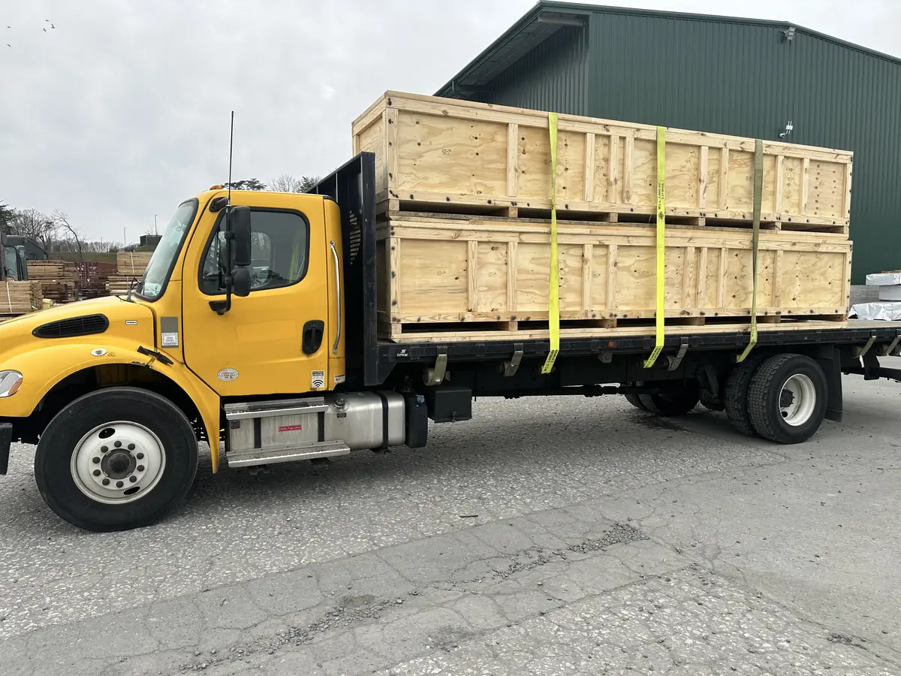
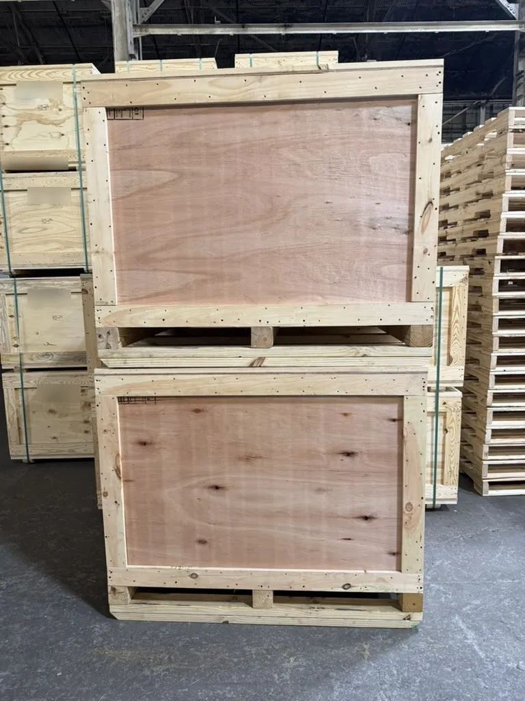
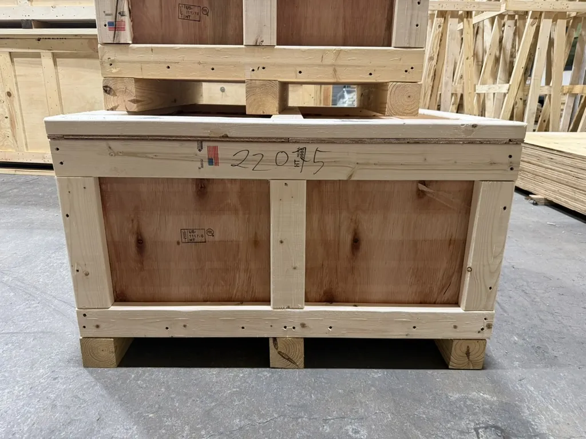

Built In-House in Baltimore Since 1997
Machinery Crating in Baltimore, MD
Skid bases, blocking and full wood crates built around your machine: its weight, its footprint and how it will be lifted. For plant moves, equipment sales and export.
Send dimensions, weight and a photo. Most machinery crates are quoted the same day.
Request a Crating QuoteA Crate Designed Around the Machine
A machine doesn't fit a stock box, and it shouldn't ship in one. Machinery is heavy, the weight is rarely centered, and the parts that matter most (spindles, controls, finished ways, hydraulic lines) are the parts a loose strap or a shifting load will damage.
Victor Wood Products builds machinery crates one job at a time at our shop on Rolling Mill Rd in Baltimore. We start with the base, because the base carries everything. Then we block and brace the machine so it can't move, and close it in to suit the trip it is taking.
We are the manufacturer, not a franchise or a broker. The people who quote your crate are the people who build it, and it is the same shop that builds our custom wood crates and blocking and dunnage lumber.


How We Build a Machinery Crate
1. The skid base
The base is sized to the machine's weight and footprint. Runner size, spacing and deck thickness are all set by the load, and the runners are laid out so a forklift can get under the crate from the sides you need. If the machine has mounting holes or feet, we plan the deck around them so it can be fastened down.
2. Blocking and bracing
A heavy machine that slides a few inches inside its crate will break the crate and often itself. We block it at the base and brace it where the frame can take the load, staying clear of sheet metal, controls and anything finished. An off-center weight gets extra attention here, because that is what tips a crate on a forklift.
3. Walls and top
Sides and top are framed and sheathed for how the crate will be handled: forklifts, rigging, and stacking inside a container. Not every machine needs to be fully enclosed. For some moves an open frame or a skid with blocking is the right answer, and it costs less.
4. Export lumber when it leaves the country
Machinery shipping overseas needs wood packaging that meets ISPM-15. We build export crates from certified heat treated lumber and mark them with the IPPC stamp, so the crate isn't the reason a shipment is held at the destination port. Our ISPM-15 guide explains what inspectors look for.
Machinery and Equipment We Crate
- Machine tools — CNC mills, lathes, grinders and presses
- Production equipment — packaging machines, conveyors, mixers and line modules
- Motors, pumps and gearboxes — dense loads that need a base built for the weight
- Compressors, generators and skidded units — crated on their own frame or on a new base
- Fabrications and assemblies — weldments, frames, tanks and one-off builds
- Parts and spares — smaller crates and boxes for components shipping with the machine
What to Send for a Quote
- Outside dimensions: length, width and height
- Weight, and whether it is heavier on one side or end
- A photo, or the manufacturer's drawing if you have one
- How it will be lifted: forklift, or rigged from above
- Where it is going: domestic or export, truck or ocean container
- The date you need the crate, and how many
Don't have all of it? Call (410) 288-4300 and we'll work out what's needed.
From Quote to Crate
Send the Details
Dimensions, weight, a photo or drawing, where it's going and how it will be lifted.
We Design the Crate
Base, blocking and enclosure sized to the machine. You get a firm quote, usually the same day.
We Build It
Cut and assembled in our Baltimore shop, with ISPM-15 lumber if the machine is leaving the country.
Delivery or Pickup
Delivered to your plant, your rigger, a forwarder's warehouse or the terminal, or picked up at our shop.
When Baltimore Companies Call Us for Equipment Crating
Plant Moves & Relocations
Moving a line or a single machine to another facility. Crates and skids built to your rigger's or machinery mover's schedule.
Selling or Returning Equipment
Used machinery going to a buyer, or a unit going back to the manufacturer for repair. One crate is a normal order.
Manufacturers Shipping Product
Repeat crates for equipment you build and ship regularly, made to the same drawing every time.
Export Through the Port
Machinery leaving through the Port of Baltimore, crated with ISPM-15 lumber and delivered to the terminal or your forwarder.
Machinery Crating — Frequently Asked Questions
What do you need to quote a machinery crate?
The machine's outside dimensions, its weight, and where it is going. A photo or a manufacturer's drawing helps a lot, and so does knowing how it will be lifted: forklift from underneath, or rigged from above. If the weight sits off to one side, tell us, because that changes how we build the base. With that we can usually quote the same day.
How heavy a machine can you crate?
There is no single limit, because the base is built to the load. A light machine gets a standard skid base; a heavy one gets larger runners, closer spacing and a thicker deck. Tell us the weight and footprint and we will tell you plainly whether it is a job for our shop.
Do I need a full crate, or just a skid?
It depends on the machine and the trip. A skid base with blocking is often enough for a short domestic move on a dedicated truck. A fully enclosed crate makes sense when the machine has exposed controls or finished surfaces, when it will be handled several times, when it is going in an ocean container, or when it will sit outdoors. We will quote either, or both so you can compare.
Can you crate machinery for export?
Yes. Export machinery crates are built with ISPM-15 heat treated lumber and carry the IPPC stamp that customs inspectors look for. We are 3–5 miles from TradePoint Atlantic and minutes from Seagirt Marine Terminal, so we can deliver to a terminal, a forwarder's warehouse or your dock. See export crating and packaging, or read our ISPM-15 guide for the rules.
How long does a machinery crate take to build?
It depends on the order. Lead time changes with the size of the crate, how many you need and what is already in the shop, so we don't quote a standard number. Tell us the date your truck or vessel is booked when you ask for a quote, and we'll tell you whether we can meet it before you commit. We build in-house, so we control the schedule.
Is there a minimum order?
No. A single crate for a one-time machine move is a normal job for us. We also build repeat runs for manufacturers who ship the same equipment regularly.
Where do you deliver machinery crates?
Throughout Baltimore and Maryland, plus Delaware, Pennsylvania, New Jersey and Northern Virginia. You can also pick up at our shop at 7700 Rolling Mill Rd in Baltimore.
Have a Machine to Ship?
Tell us the dimensions, the weight and where it's going. We'll design the crate and get you a quote, usually the same day.